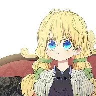

This is Athanasia
Athanasia de Alger Obelia is the main protagonist in Who Made Me a Princess, and the current Crown Princess of the Obelian Empire. After reading a romance fantasy novel named The Lovely Princess, the protagonist goes to sleep and finds herself reincarnated into the infant body of princess Athanasia;[5] a side character in the fictional novel who was executed by her father, Claude de Alger Obelia after being falsely accused for poisoning her “sister” the beloved Lovely Princess Jennette Margarita.[6] In her new life, Athanasia is determined to avoid her fated execution and survive past the age of 18.